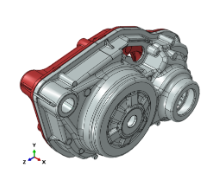
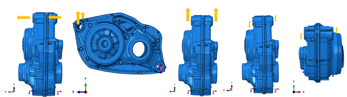

Méthodologie Abaqus : analyse statique et analyse modale croisées pour caractériser la rigidité intrinsèque du moteur, puis sous-structuration cadre/drive unit et chargement pédalier normatif ISO 4210‑6 pour décomposer la déformation réelle entre contribution du cadre et contribution propre du moteur.
Le Drive Unit (carter moteur électrique) d'un vélo à assistance électrique de type Mountain Bike est fixé au cadre en 4 points. Sa rigidité propre, combinée à la flexibilité du cadre, détermine les déplacements réels du moteur en usage — un paramètre clé pour le confort, le bruit et la durabilité de l'ensemble.
Caractériser la rigidité de la drive unit, puis voir comment elle se comporte une fois montée sur le vélo — pour savoir quoi renforcer en priorité, le cadre ou le moteur.
Caractériser la rigidité de la drive unit isolée, indépendamment du reste du vélo, via une analyse statique et une analyse modale croisées.

Carter principal + sous-composant interne (3 points de fixation).
Des déplacements/rotations unitaires sont imposés successivement en traction, torsion et flexion, afin d'extraire la rigidité (k = Réaction / déplacement imposé) associée à chaque direction et d'établir la hiérarchie des sollicitations les plus critiques.

Déplacements/rotations unitaires imposés successivement (flèches oranges) pour extraire la rigidité associée à chaque direction.
Même conditions aux limites qu'en statique (encastrement des 4 points de fixation). L'analyse modale (step Frequency, Lanczos) fournit les premières fréquences propres et leurs déformées associées, sans chargement appliqué — une propriété intrinsèque du système.
Plus une direction est souple en statique, plus sa fréquence propre associée doit être basse en modal (les modes sont classés du plus bas au plus haut, donc « premier mode » et « fréquence la plus basse » désignent la même chose). Si la direction molle en statique correspond bien au mode le plus bas en modal, ça confirme que le modèle éléments finis est cohérent — l'analyse modale ne mesure pas une rigidité, elle vérifie juste que l'ordre déjà trouvé en statique tient toujours en dynamique.
À l'issue de cette première partie, la rigidité de la drive unit isolée est caractérisée et validée dans chaque direction (traction, torsion, flexion). Ces valeurs de rigidité servent de référence en Partie 2 pour isoler la contribution propre de la drive unit dans la déformation observée sur l'assemblage complet.
Évaluer le comportement réel de la drive unit une fois intégrée au vélo, en tenant compte de la flexibilité du cadre, afin de décomposer la déformation totale entre contribution du cadre et contribution propre de la drive unit.
Le cadre et la drive unit sont chacun condensés en superéléments (substructuration Abaqus) à leurs points d'interface, ce qui réduit fortement le coût de calcul lors de leur intégration dans l'assemblage vélo complet, tout en conservant un comportement mécanique équivalent au modèle détaillé.
À gauche, principe de la condensation (modèle détaillé → superélément à 4 nœuds de rétention) ; à droite, import des superéléments (drive unit + cadre) et assemblage sous Abaqus, avec deux types de connexion aux points de fixation : Beam (liaison rigide, tous les CORM contraints) et Translator (liaison glissante, un degré de translation libre) — géométrie et fichiers renommés pour l'illustration.
Le chargement appliqué sur l'assemblage complet reprend la configuration de l'essai de fatigue normalisé ISO 4210‑6 (§4.3), catégorie Mountain Bike, plutôt qu'un effort choisi arbitrairement — ce qui rend le cas de charge défendable, traçable et comparable entre différentes études.
| Type de bicyclette | City & trekking | Young adult | Mountain | Racing |
|---|---|---|---|---|
| Force F₁ (N) | 1 000 | 1 000 | 1 200 | 1 100 |
Tableau des efforts sur l'axe de pédalier par catégorie de vélo, redessiné à partir de l'ISO 4210‑6 §4.3 (Tableau 3) — catégorie Mountain Bike retenue pour cette étude.
| Paramètre | Valeur |
|---|---|
| Force appliquée (F) | 1 200 N (catégorie Mountain Bike) |
| Point d'application | 150 mm de l'axe du pédalier |
| Inclinaison | 7,5° (± 0,5°) / plan longitudinal du cadre |
| Mode de chargement | Alterné (pédale par pédale, retombée à ≤5% avant l'autre) |
| Conditions aux limites | Montage repris à l'identique de l'essai normatif |
Chainforce appliquée au tube de direction pour le cas de charge réel (cadre souple) — deux cas alternés, pédale droite (2.1.1) et pédale gauche (2.1.2).
Même chargement rejoué avec le cadre rendu infiniment rigide — réactions aux points de fixation comparées au cas souple pour valider que la flexibilité du cadre n'affecte pas significativement le torseur transmis à la drive unit.
Le chargement étant alterné, deux cas de charge distincts sont traités (pédale droite, pédale gauche), donnant deux jeux de résultats pour l'extraction ci-dessous.
La déformation totale mesurée dans l'assemblage complet se décompose en deux contributions :
δ_total = δ_DU (calculé à partir de la rigidité de la Partie 1, appliquée au torseur d'effort réellement transmis) + δ_cadre (part restante, imputable à la flexibilité du cadre)
Réactions aux connecteurs de l'interface cadre/drive unit, dans l'assemblage complet.
Réutiliser la rigidité de la Partie 1 : δ_DU = F_réel / k, sous ce même torseur d'effort.
Comparaison au déplacement total mesuré dans l'assemblage complet (δ_total).
Pour vérifier que le torseur transmis à l'interface cadre/drive unit ne dépend pas significativement de la flexibilité du cadre, la même simulation est rejouée avec un cadre rendu infiniment rigide. Si les réactions aux points de fixation restent proches entre les deux cas, ça confirme que la rigidité du cadre a un effet limité sur le chargement vu par la drive unit — les réactions du cas cadre réel peuvent alors être réappliquées sur le cadre seul (sans drive unit) pour obtenir sa déformation propre.
Exemple illustratif de lecture : répartition en % de la déformation totale entre contribution du cadre (bleu) et de la drive unit (rouge), pour chacune des trois directions de sollicitation.
Pour chaque direction, le composant représentant la plus grande part de la déformation totale est désigné comme le facteur limitant — c'est lui qu'il convient de renforcer en priorité pour réduire le déplacement global observé.
Renfort du cadre (nervures, épaississement local aux points de fixation).
Renfort du carter moteur (nervurage interne, épaisseur des parois).
Arbitrage selon les contraintes de masse et de coût.
La Partie 1 (statique + modale croisées) caractérise la rigidité intrinsèque de la drive unit, indépendamment du reste du vélo. La Partie 2 (sous-structuration + chargement pédalier ISO 4210‑6) montre ensuite comment cette même rigidité se comporte une fois le moteur intégré au cadre, sous un cas de charge normatif et traçable plutôt qu'arbitraire. La démarche — caractériser isolément, puis réintégrer et décomposer — se transpose telle quelle à d'autres architectures de drive unit.
Le livrable central de cette étude n'est pas une valeur de rigidité isolée, mais la décomposition cadre/drive unit elle‑même : elle indique, direction par direction, quel composant est réellement limitant — et donc lequel renforcer en priorité — plutôt que de le supposer.